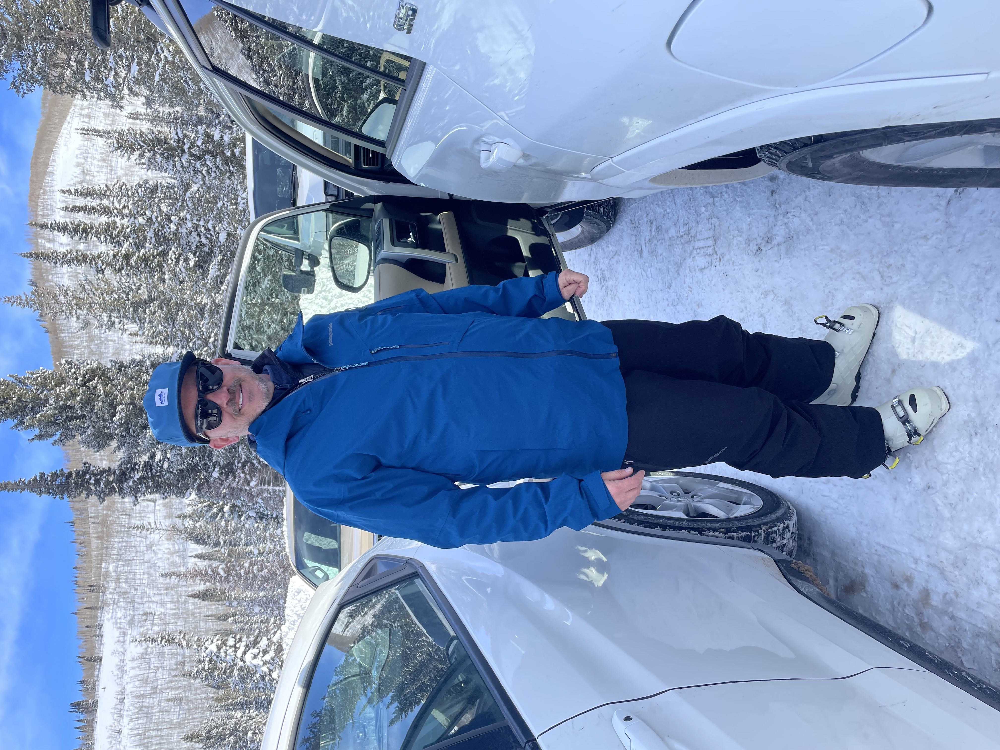

Timeline
- 2015: First started skiing at Snowbasin Resort at the age of 7
- 2019: Moved to Salt Lake City, started skiing at Cottonwood Canyon resorts
- 2022: First double black, 180, and small cliff
My Dad
My dad was the one who got me into skiing. He started skiing at the age of 12. He wanted to teach us to ski earlier, but because we lived in Texas until I was three, he was never able to. But a couple years after we moved to Utah, he remembered that he wanted to teach us. He's always been my ski buddy, and even though I'm now better than him, and I don't usually go with him now, it's still nice to be able to have someone to ski with when I have no one else on weekends. I'm grateful he taught me such a great hobby.
Goals
- Land a 360
- Jump bigger cliffs
- Land a backflip
- Get into ski touring